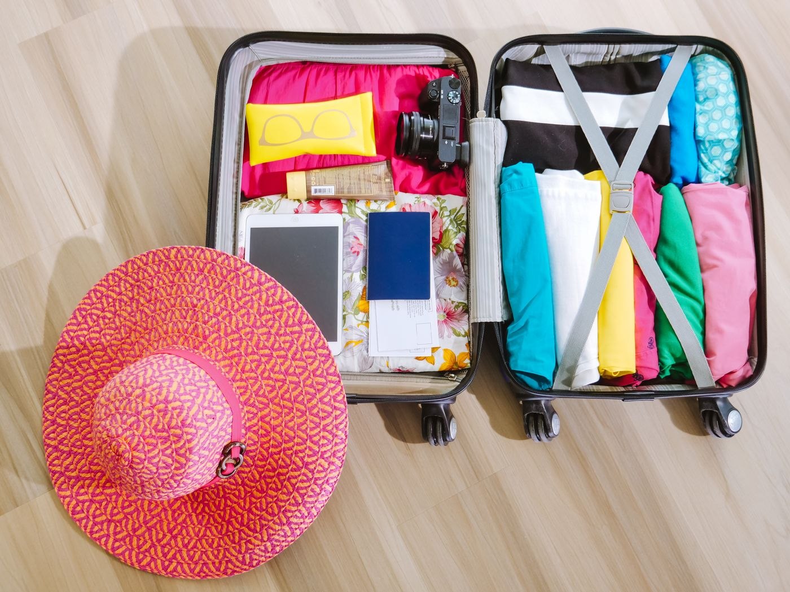

01 / 03BEGINNING · 01 OF 03
Room for adventure.
The bag is packed. The everyday can wait. Everything you need for a week away is right here.
WHAT THE ORDER SUGGESTS
At the beginning, the packed suitcase feels like anticipation: something good is about to happen.
STORY 01 · FRAME 01 / 03
Your sequence
CLICK A FRAME TO JUMP TO ITUse the buttons, click a frame, or press the left and right arrow keys.
The holiday begins. Beginning: Room for adventure.